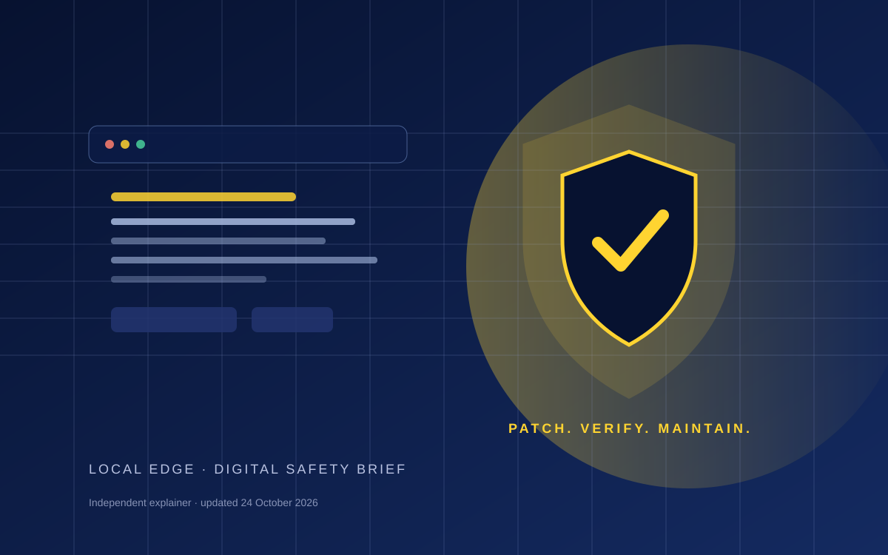

Updated: 24 October 2026. This is a plain-language explainer, not a technical incident response guide. Security details can change as maintainers publish further advisories.
What happened?
On 21 October 2026, the PHP project announced fixes for two critical vulnerabilities, CVE-2026-109618 and CVE-2026-109619. The official advisory says the flaws could allow an attacker to execute code remotely without authentication in affected PHP installations. The project rated both issues as critical and urged users to update.
OpenAI reported that the vulnerabilities were found as part of a coordinated security effort involving researchers and security providers, with AI helping identify a flaw. The PHP maintainers led the fixes. The important lesson is not that AI alone is a security solution; it is that discovering a flaw only helps if maintainers, hosting providers and site operators can validate and deploy a fix.
The Associated Press reported an urgent patching response from governments and businesses. Reuters separately reported that South Africa's presidency temporarily took its website offline as a precaution, while officials said there was no indication of a security breach. That distinction matters: taking a site offline to patch it is not, by itself, evidence that it was hacked.
Who may be affected?
The issue affects PHP installations that serve web requests. PHP runs on many websites and web applications, including common content-management platforms such as WordPress, Drupal and Joomla. But the specific risk depends on the PHP runtime and version installed by the site's hosting provider or server administrator.
The official PHP advisory lists patched releases 8.5.12, 8.4.27, 8.3.36 and 8.2.35. PHP's version numbers and supported branches matter, so do not assume that installing a WordPress theme update or a plugin update automatically updated the server's PHP runtime.
A useful distinction
A PHP-powered site
May need a PHP runtime or hosting-package update. The owner should confirm the host has applied the relevant security fix.
A static HTML site
Plain HTML, CSS and JavaScript files do not execute PHP on the web server. Other platform, account, dependency and configuration risks still exist.
For example, the current Local Edge site is a static HTML/CSS/JavaScript site served by Cloudflare Worker infrastructure, based on the files in this project. That does not make every part of a website or account immune to security problems; it means this particular PHP runtime advisory is not directly describing the site's page files.
What should a small business owner do?
Most business owners do not manage PHP directly. Your first move is to contact the hosting provider, web administrator or maintenance supplier, and ask a short, specific question.
“Does my website run PHP? If so, have you confirmed that the affected PHP installation is patched for CVE-2026-109618 and CVE-2026-109619? Please confirm the runtime version or the vendor's fixed package.”
If you manage the server yourself, follow the official PHP or operating-system vendor guidance. Back up the site and database first, apply the vendor-supported update, test critical pages and forms, and verify that the deployed runtime is the one you intended. Do not copy server configuration changes from a social media post without understanding the environment.
The PHP project also published additional guidance on 23 October for an unusual configuration related to session upload progress. That advisory is specific and technical; for most site owners, the appropriate route is to ask their host to confirm their exposure and mitigation rather than change server settings on their own.
What this does not mean
- It does not mean every website was compromised.
- It does not mean every website uses PHP.
- It does not mean a site displaying a warning has definitely been breached.
- It does not mean a web designer can guarantee security simply by changing a visual design.
A website's appearance and the security of its underlying hosting stack are different things. Good website care includes clear ownership, supported software, timely updates, sensible account access, secure backups and a plan for handling problems.
A practical checklist
- Know who controls your domain, hosting and website platform.
- Ask your host which server-side software and PHP version your site uses, if any.
- Confirm that critical security updates have been applied by the responsible administrator.
- Keep the content-management system, themes, plugins and other dependencies updated.
- Use unique passwords and multi-factor authentication for hosting and administrator accounts.
- Keep backups and test that you can restore them.
- Test contact forms, booking enquiries and other important paths after maintenance.
For a small hospitality or service business, the practical goal is not to become a security engineer. It is to know who is responsible for maintenance, receive a clear answer when a serious vulnerability is announced, and make sure updates are not silently neglected.
Do you know who maintains your website?
Local Edge's website-care options cover agreed small updates and routine checks of important links and contact paths. They are not a substitute for specialist server security or incident response.
See website care options Ask a question
Sources
- PHP project, Security advisory: Critical remote code execution vulnerabilities, update now (21 October 2026), including the patched releases and follow-up notes.
- OpenAI, Patch the Planet: global response coordination as agents uncover critical vulnerabilities (21 October 2026).
- Associated Press, Rush is on to patch a software vulnerability that could impact 70% of websites worldwide (October 2026).
- Reuters, South African presidency website temporarily offline after PHP warning (23 October 2026).
This article summarises public advisories for general awareness. It is not a substitute for guidance from your hosting provider, system administrator or a qualified security professional.